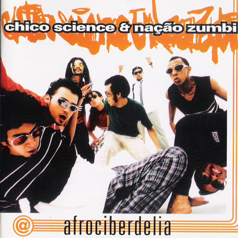
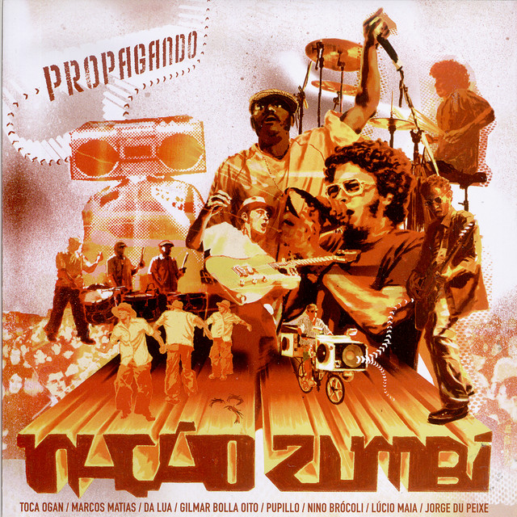

A Praieira
Uma das músicas mais conhecidas da fase de Da Lama ao Caos, com a energia e a mistura de ritmos características da banda.
De Recife, desde os anos 1990
Do primeiro, ainda com Chico Science, ao que leva o nome da banda.
A discografia da Nação Zumbi mostra a mistura de maracatu, rock, música eletrônica e outras influências que marcam a identidade da banda.
| Ano | Álbum | Sobre |
|---|---|---|
| 1994 | Da Lama ao Caos | O primeiro disco e o mais ligado ao manguebeat. Tem A Praieira. |
| 1996 | Afrociberdelia | Mais experimental, com maracatu e sons eletrônicos. Tem Maracatu Atômico. |
| 1998 | CSNZ | O primeiro disco depois da morte de Chico Science. |
| 2000 | Rádio S.Amb.A. | A banda segue misturando ritmos e testando sons novos. |
| 2002 | Nação Zumbi | O disco que leva o nome do grupo. |
Uma das músicas mais conhecidas da fase de Da Lama ao Caos, com a energia e a mistura de ritmos características da banda.

Uma releitura que aproxima a tradição musical brasileira de uma sonoridade moderna e experimental.

Uma música que mostra a força dos ritmos pernambucanos na identidade da Nação Zumbi.